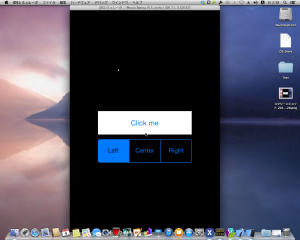
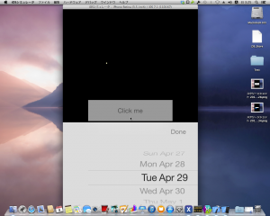
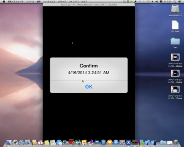
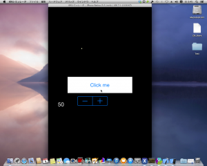
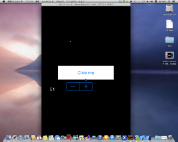

前回の続き。
Experimentation
1. UISegmentedControl
まずは、MonoTouch.UIKit.UISegmentedControlを追加します。 これは**.NETでいうSystem.Windows.Forms.TabControl**になります。 ボタンの上にUISegmentedControlが追加されました。 ビルド実行するとこうなります。
 Left,Center,Rightの領域をタップすると、その項目の文字列がアラートビューで表示されます。 
{kind=link}
2. UIDatePicker
次はMonoTouch.UIKit.UIDatePickerを追加します。 これは**.NETでいうSystem.Windows.Forms.MonthCalendar**です。 ただし、表示スタイルに、下記のモードが用意されています。
UIDatePickerModeDateAndTime：月日時分
UIDatePickerModeDate：年月日
UIDatePickerModeTime：時分
UIDatePickerModeCountDownTimer:カウントダウン
サンプルを修正します。 ビルドして、ボタンを押下すると、日時を選択できます。
 選択後、Doneボタンを押下すると、選択した日付+現在時刻がアラートビューで表示されます。 
今回のサンプルはかなり趣が異なっています。 というのもUIDatePickerはMonoTouch.UIKit.UIViewController.Viewに表示されるのでは無く、MonoTouch.UIKit.UIActionSheetに表示されています。 UIActionSheetはアクションシートと呼ばれる、ユーザに選択肢を提示するコントロールです。 ある種の別ウィンドウを作成し、そのウィンドウ内にUIDatePickerとUIButtonを追加しています。
{kind=link}
{kind=link}
3. UIStepper
最後はMonoTouch.UIKit.UIStepperを追加します。 これは**.NETでいうSystem.Windows.Forms.NumericUpDown**です。 ただし、表示部分は自分で用意する必要があります。 ビルドするとUIStepperが追加されています。
 +,-をタップすると、左の数値部分が変化します。  また、タップしたままにすると、数値の変動速度が加速されていきます。 そして、最小値、または最大値に達すると、その側はタップできなくなります。 
{kind=link}
{kind=link}
Conclusion
今回は、 System.Windows.Forms.TabControlに対応するMonoTouch.UIKit.UISegmentedControl。 System.Windows.Forms.MonthCalendarに対応するMonoTouch.UIKit.UIDatePicker。 System.Windows.Forms.NumericUpDownに対応するMonoTouch.UIKit.UIStepper。 を使用しました。 今回も、対応する云々というのは私の偏見ですが、どういうものに似ているか、という認識は取っつきにくさを解消するための方便だと思います。 メインとなるコントロールは次で最後になると思います。